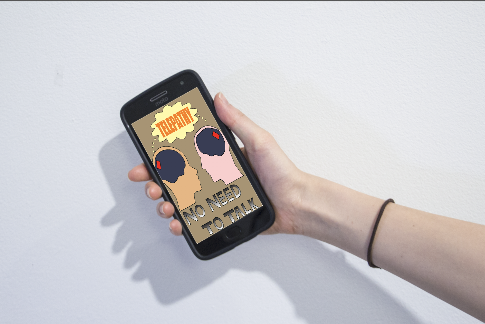
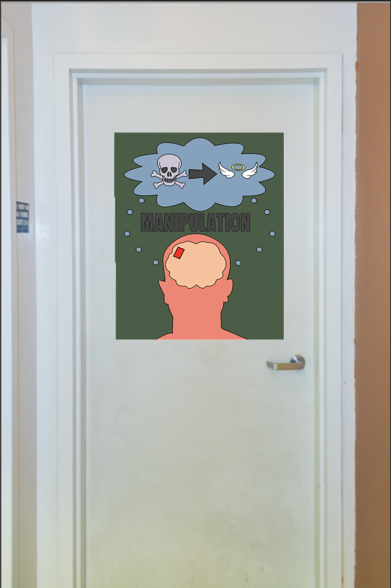
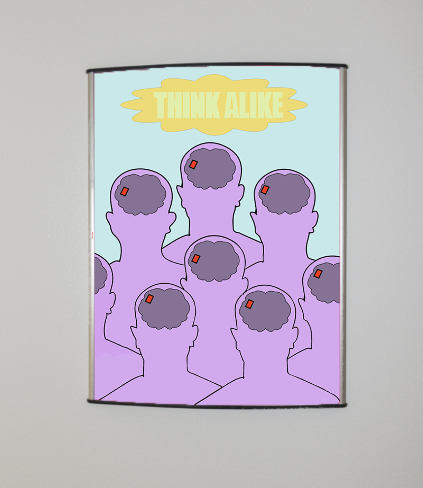
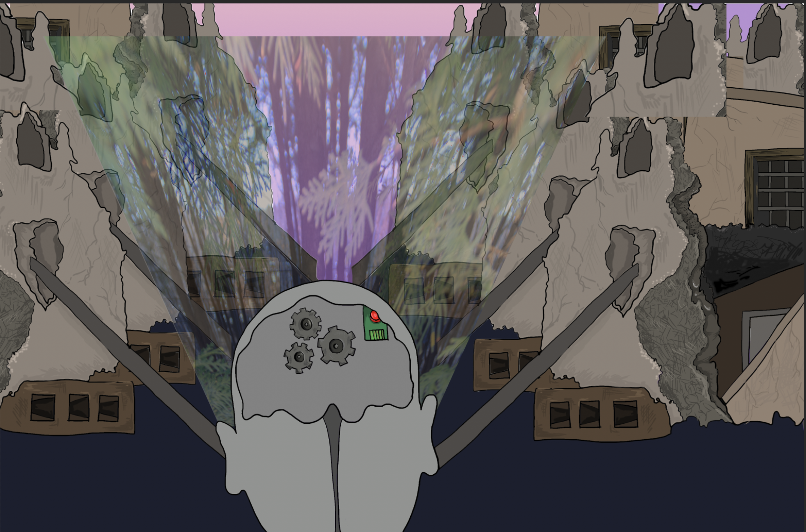
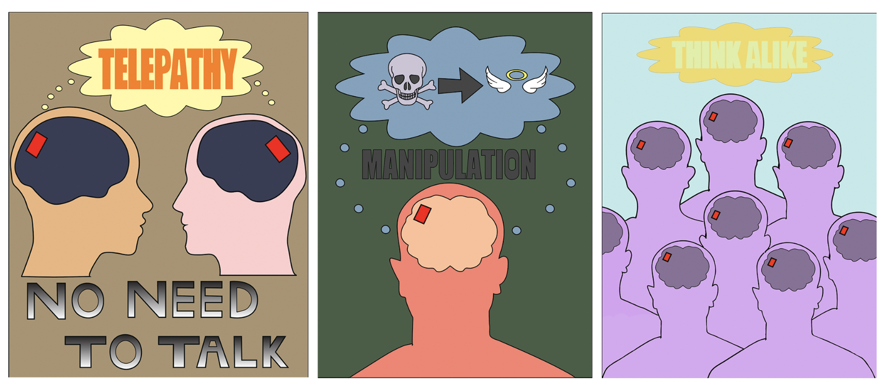

Brain Implants Change the World!
There have been a lot of improvements with what we can do with brain implants!
It all started with trying to find the solution to moving things with the brain
and not our own bodies. It all started in 1998 when a patient was first able to
move a cursor on the screen through the implant in their brain. That soon led
to the invention of reverse paralysis. A chip is inserted into the brain to
send signals to the electrodes that stimulate the part of the body that
needs to regain movement.
We are excited to finally announce the concept posters for the advances in
the area of brain implants that we have began to create. They will be
coming out soon for the public to use in their daily lives.

Why waste energy on talking when brain implants can give us the power to
communicate using telepathy. This is every kid's dream! Throw away those
cellphones and use brain implants instead!

Now we don't have to worry about evil in this world. We can just give criminals
these implants to change their brains from evil to good!

Worried about falling behind? No need to be afraid, we can all have the brains
of Einstein through these brain implants! We can all share the same opinions
too, so we don't get into arguements!

With these brain implants, we can see the world we desire right in front of
our eyes, the whole world will change to your liking! One problem is that the sensors
surrounding us that share the same electrical frequency as the one in the brain
implant could turn it off. No need to worry though, we can just destroy all
the sensors around us!
